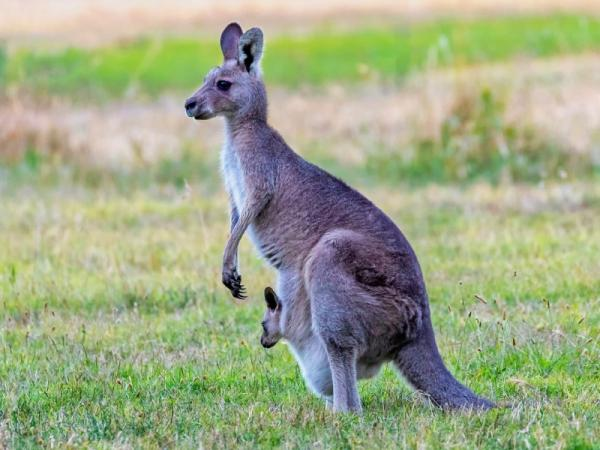

El koala es declarado funcionalmente extinto
El término canguro es el nombre común que se utiliza para designar a las especies de mayor tamaño de la subfamilia Macropodinae, tal como el término ualabí se utiliza para denominar a las de menor tamaño.

| |
El koala es declarado funcionalmente extinto |
Esta propiedad transparenta la foto hasta el punto que nosotros queramos para ver el texto trasero. |
|  | El término canguro es el nombre común que se utiliza para designar a las especies de mayor tamaño de la subfamilia Macropodinae, tal como el término ualabí se utiliza para denominar a las de menor tamaño. |
Esta propiedad redondea los bordes de la imagen y la mueve hacia la derecha |
| Esta propiedad deforma la imagen hacia la izquierda los grados que queramos. | ||
|
|
Esta propiedad deforma la imagen hacia la izquierda los grados que queramos. |